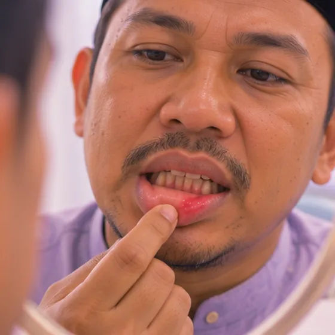

Perikoronitis (radang gusi di sekitar gigi)
Gusi bengkak dan sakit di atas gigi yang baru separuh tumbuh, selalunya gigi geraham bongsu
Apa itu
Sisa makanan dan kuman tersangkut di bawah lipatan gusi di atas gigi yang belum tumbuh sepenuhnya, lalu gusi menjadi merah, bengkak dan sakit.
- Belakang rahang bawah
- Selalunya remaja dan dewasa muda
- Gusi sakit dan bengkak
- Jumpa doktor
- Doktor gigi
- Biasa pada
- Remaja dan dewasa muda ketika gigi geraham bongsu tumbuh
- Berjangkit
- Tidak
- Perjalanan
- Mungkin reda dalam beberapa hari, tetapi boleh berulang sehingga gigi diperiksa doktor gigi
Tanda biasa

Gusi merah dan bengkakBengkak gusi 
Sakit merebak ke telinga atau rahangSakit rujukan 
Nafas atau rasa mulut tidak enakHalitosis
Tanda-tanda lain
- Sukar membuka mulut sepenuhnya atau mengunyah
Mengapa ia berlaku

Kuman (jangkitan)Punca jangkitan
Punca lain
- Gigi yang hanya separuh tumbuh, paling biasa gigi geraham bongsu
- Tidak membersihkan bahagian belakang mulut dengan baik
- Keletihan atau tekanan boleh mencetuskannya
Jumpa doktor dahulu jika
- Sukar bernafas atau menelan: ke hospital segera
- Bengkak merebak ke muka, pipi atau leher
- Demam, atau nanah keluar dari gusi
- Mulut hanya boleh dibuka sedikit sahaja
- Sakit yang kerap berulang atau tidak reda dalam beberapa hari
Jika mana-mana berkenaan, sila jumpa doktor sebelum sesi.
Halaman ini ialah maklumat am. Sila terus mengambil ubat biasa anda dan terus berjumpa doktor.
Teruskan mengambil ubat biasa anda dan terus berjumpa doktor. Sesi kami ialah sokongan lembut dan tidak menggantikan rawatan perubatan.
Menjaga diri

Tanya ahli farmasiNasihat ahli farmasi
Lebih banyak cara menjaga diri
- Berus perlahan dan bersihkan sekitar gigi belakang selepas makan
- Berkumur dengan air garam suam
- Makan makanan lembut dan elakkan mengunyah di sebelah itu
- Jumpa doktor gigi untuk memeriksa gigi itu
Beritahu ahli terapi anda
- Demam atau jangkitan aktif
- Diabetes atau deria kulit berkurang
- Kehamilan
Ahli terapi anda akan menyemaknya bersama anda sebelum bermula.
Soalan dan jawapan
Apakah Perikoronitis (radang gusi di sekitar gigi)?
Gusi bengkak dan sakit di atas gigi yang baru separuh tumbuh, selalunya gigi geraham bongsu. Sisa makanan dan kuman tersangkut di bawah lipatan gusi di atas gigi yang belum tumbuh sepenuhnya, lalu gusi menjadi merah, bengkak dan sakit.
Apakah tanda biasa Perikoronitis (radang gusi di sekitar gigi)?
Gusi merah dan bengkak · Sakit merebak ke telinga atau rahang · Nafas atau rasa mulut tidak enak
Mengapa Perikoronitis (radang gusi di sekitar gigi) berlaku?
Kuman (jangkitan)
Bagaimana menjaga diri dengan Perikoronitis (radang gusi di sekitar gigi)?
Tanya ahli farmasi
Bolehkah sesi AI Body Master membantu Perikoronitis (radang gusi di sekitar gigi)?
Sesi ialah sokongan meridian tanpa jarum yang lembut untuk kesejahteraan anda. Ia tidak merawat atau menyembuhkan Perikoronitis (radang gusi di sekitar gigi) dan tidak menggantikan ubat atau doktor anda. Beritahu ahli terapi anda sebelum sesi bermula.
Keadaan berkaitan
- Bibir mengelupas (keilitis eksfoliatif)
- Radang bibir (keilitis)
- Lidah geografik
- Jangkitan kulat dalam mulut (kandidiasis)
- Fluorosis gigi
- Ulser aftus berulang
- Soket kering (selepas cabut gigi)
- Sista periapikal (sista akar gigi)
- Kerosakan buah pinggang akibat asid urik tinggi
- Nodul (ketulan kecil)
- Terseliuh pinggang secara mengejut
- Sista
Rujukan: General information based on public health sources such as Mayo Clinic, NHS, Cleveland Clinic and NCBI StatPearls.
Halaman dikemas kini: 2026-11-01